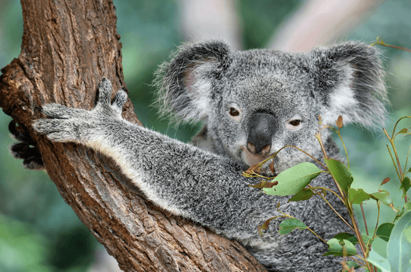
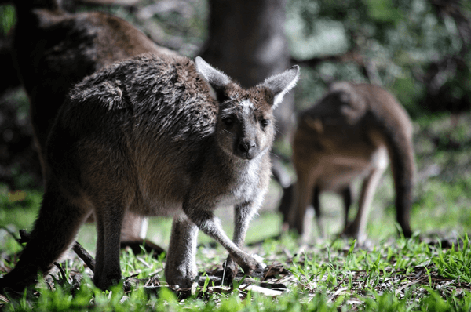
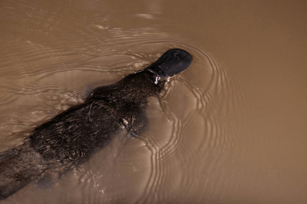
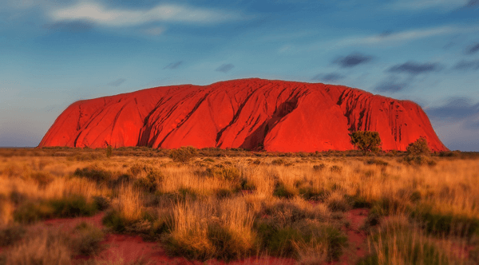
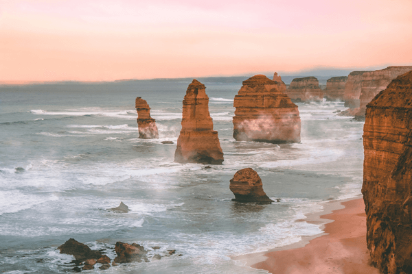
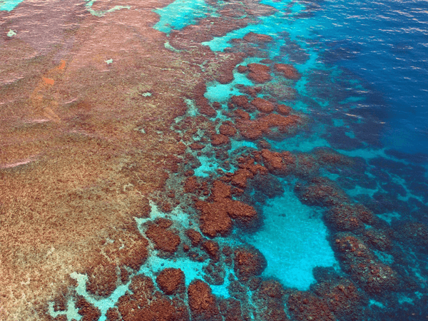

Australia has a wide variety of climates, the largest part being desert. Only the south east and wouth west corners have a temperate climate, making these areas perfect for making fine wines. Australia is one of the worlds largest exporters of wine. Many vines in the area are over 150 years old.
Local Wildlife
There are over 200,000 species that live in Australia, around half are native to the country. Here are three of my personal favorites.
"My message is simple: love and conserve our wildlife." Steve Irwin

Koalas spend 18-20 hours a day sleeping to preserve energy. This is so they can digest their fibrous diet, mainly gum leaves.

There are over 30 million kangaroos in Australia covering 55 different species.

This egg-laying mammal is native to south eastern Australia, mainly Tasmania. Main habitats include small rivers and streams.
Major Landmarks
Australia has many well known landmarks scattered throughout the country. Here you will see three of the most famous landmarks.

Ayer's Rock is the world's largest monolith, and is located to the northeast of Alice Springs. it is known to the indiginous Aboriginal people as Uluru. Many caves at the base of the rock are sacred to several tribes and contain carvings and paintings.

The Twelve Apostles is a major landmark along the Great Ocean Road, which stretches from Adelaide to Melbourne. The stunning visual is created by limestone rocks in close proximity to one another along the coast. These rock formations date back over 20 millions years. The strong erosion from the Southern Ocean created, and will eventually destroy these rock formations.

The Great Barrier Reef is the longest in the world, and extends 2,300km (1,429mi) off the east coast. The 3,000 individual reefs house over 9,000 different species.